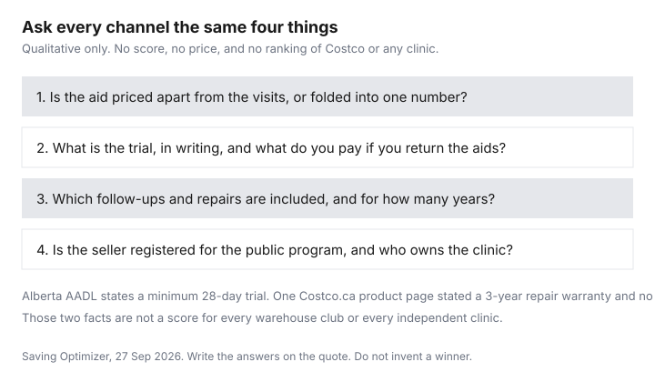

Healthcare · Canada
Buying Hearing Aids in Canada: Costco and Big-Box Centres vs Independent Clinics, Asked the Right Way
Two quotes that do not list the same inclusions are not comparable, and a brand name does not fix that. This page is the question list for Canadian channels: warehouse clubs, retail chains, manufacturer-owned clinics, and independents. It does not rank aids or clinics. Dollar amounts for a pair of aids were not opened, including on the Costco.ca product page checked on 27 Sep 2026, so none are printed. The cost of the device and the Ontario Assistive Devices Program cap are already on the hearing-aid and ADP guide. Use that page for the funding arithmetic. Use this one to see whether the seller in front of you can even submit the application.
Key takeaways
- Ontario ADP, on the hearing-devices page updated 2 Mar 2026, pays 75 percent of the cost of hearing aids up to $500 per side. You pay the rest. Apply before you buy, or ADP pays none of it.
- In Ontario, only an audiologist or a physician may prescribe a hearing aid. A hearing instrument specialist is not allowed to prescribe one, and can help you get a prescription from an audiologist or a doctor.
- Alberta’s AADL page states a minimum 28-day trial for hearing aids it funds, and it tells you not to sign the validation certificate until you are satisfied. That is not a national trial length.
- A Costco.ca hearing-aid product page opened 27 Sep 2026 listed a 3-year repair warranty for that product and did not show a price or a trial length. The general return FAQ does not name hearing aids.
- Group A veterans already supported by Veterans Affairs Canada for the same device, and people already supported by the Workplace Safety and Insurance Board for the same device, do not qualify for Ontario ADP.
Channels: warehouse clubs, retail chains, manufacturer-owned clinics and independents
Sort the seller before you sort the aid. A warehouse club sells inside a membership retailer. This draft did not open a Costco.ca page that states whether a membership is required for a hearing test, so ask that in writing rather than assuming a rule from another country. A retail chain is a banner with more than one counter. A manufacturer-owned clinic is a counter where the company that makes the aid also employs the person fitting it. An independent clinic is a seller that is not that factory’s own counter. Independence is not the same thing as being registered with a public program. An ADP-registered vendor can sit inside any of these channels. If the vendor is not registered, Ontario ADP will not pay that seller.
The hearing-devices page says you find an ADP-registered vendor after the assessment, and the vendor submits the form. Buying first means you pay the full cost. The same sequence is on Alberta’s Aids to Daily Living page: the program does not reimburse equipment you buy before you are assessed and authorized, and you buy from an approved vendor. The turning-65 guide is the wider calendar of what changes at that birthday. It is not a second ADP application. The eye-exam guide is the vision version of a provincial eligibility map. Hearing and vision are both common cash gaps. They are not the same program.
Bundled vs unbundled pricing: what's included in the price
A bundled price folds the aid and a list of services into one number. An unbundled price sells the aid, then bills the visits, the adjustments, the domes or moulds, and the wax filters as they happen. Neither model is a bargain until you write the list. Ask which of these are inside the number: the assessment, the fitting, follow-up visits and for how many months, cleaning, a charger or batteries, loss-and-damage coverage, and repairs after the manufacturer’s warranty. A lower aid price with every visit billed can pass a higher aid price that includes two years of adjustments. This page did not open a bundled or unbundled fee schedule, so it does not say which channel uses which model.
Ask for the list in writing on the quote, not in a conversation you will not remember. If the seller will not separate the aid from the service, write “bundled, services not itemized” on your scorecard and do not pretend you compared service. Manufacturer-owned clinics should be asked one extra question: can you trial an aid from a different manufacturer, or only the house brand? The answer belongs in the independence column. It is not a verdict that the house brand is worse.
Questions to ask any clinic: trial period, return fees, warranty, follow-ups
There is no single Canadian trial length on the pages opened for the private channels. Alberta’s AADL benefits page says you are given a minimum 28-day trial on hearing aids that program funds. It says not to sign the validation certificate until you are satisfied, and that you may continue the trial with adjustments or return the aids. Non-exempt clients who return the aids, on that page, pay for earmoulds and custom accessories that cannot be returned to the manufacturer. Cost-share exempt clients are not charged in that return situation, because AADL pays the vendor for services rendered. That 28-day floor is an Alberta public-program rule. It is not a Costco rule and not an Ontario private-clinic rule.
One Costco.ca hearing-aid product page, opened 27 Sep 2026, listed a 3-year repair warranty and said the product was not available. It did not list a price or a trial. Naming that warranty is not a recommendation of the product, and it is not a promise that every aid in the warehouse has the same warranty. Costco.ca’s general return FAQ says the company will refund the purchase price with stated exceptions, including a 90-day window for listed electronics, and that returns are considered case by case with limitations. Hearing aids are not named in the exception list that was on that FAQ. Do not invent a 180-day trial from a forum or a U.S. review. Ask the Hearing Aid Centre for the written trial, any restocking fee, and the warranty on the model in your quote.
Who's who: audiologists vs hearing instrument practitioners
Ontario’s hearing-devices page draws the line. Hearing aids can be provided only with a prescription. Only audiologists and physicians are legally allowed to write that prescription. Hearing instrument specialists are not legally allowed to prescribe hearing aids in Ontario. They can help you obtain a prescription from an audiologist or a doctor. For a child 18 or younger, the page says to be assessed by an audiologist registered with ADP, and that the first application, or hearing loss that is not stable, may also involve an otolaryngologist. For an adult 19 or older, the hearing test can be done by an audiologist or a hearing instrument specialist registered with ADP. The college site for audiologists did not open from this draft. Confirm the person’s title on the provincial register before you treat a business card as a prescription.
The title changes what you are buying. A test that does not end in a prescription from an audiologist or a physician is not, on that Ontario page, enough to dispense the aid. A clinic that employs a hearing instrument specialist can still be the right counter if the prescription comes from someone who is allowed to write it. Ask who writes the prescription, who programs the aid, and who you see at the follow-up. Those can be three people. Alberta’s page says a complete hearing assessment may be done by an AADL vendor or by an audiologist working for Alberta Health Services before you discuss aid options. Again, that is Alberta’s sequence, not every province’s.
Public and benefit funding that works across channels (ADP, VAC, workplace)
Ontario ADP does not follow a logo. It follows eligibility and a registered vendor, and you apply before you purchase. If you qualify and the application is approved, the program covers 75 percent of the cost of hearing aids up to a maximum of $500 per side, and 75 percent of an FM system up to $1,350. You pay the rest. Income is not part of the test. You must be an Ontario resident with a valid health card and a disability that requires the device for six months or longer. You do not qualify if the Workplace Safety and Insurance Board already supports the same device, or if you are a Group A veteran already supported by Veterans Affairs Canada for the same device. People on Ontario Works, the Ontario Disability Support Program, or Assistance for Children with Severe Disabilities can be funded up to 100 percent, subject to maximums in the program’s hearing-devices manual. The ADP guide stays with those caps. This page does not re-derive them into a brand ranking.
Alberta AADL is a different program and a different cost share. The benefits page opened 27 Sep 2026 says Albertans pay 25 percent of the benefit cost to a maximum of $500 per individual or family per year, and that low-income Albertans and people receiving income assistance do not pay that share. Hearing aids are on the covered list. The same page sets hearing-aid eligibility by age and income, including a once-every-five-years frequency, and the 28-day trial above. Do not paste Ontario’s $500-per-side cap onto an Alberta quote. Workplace benefits are a third payer. This draft did not open a model booklet with a hearing maximum, so none is printed. Read the hearing line, not the drug formulary. The medical expense guide covers the tax side: Medical Expenses 2025 lists hearing aids, including repairs and batteries, as eligible, and the prescription column on that row is No. Amounts a public program pays are not yours to claim twice. Confirm with the CRA. This is not tax advice.
A clinic-comparison scorecard
Fill one row per quote. The notes below are the questions the opened pages support. They are not scores, and they are not prices. A channel that will not answer a cell is not “worse.” It is incomplete, and you should not buy on an incomplete row.
| Channel | Pricing model to ask for | Trial and return | Follow-up | Independence and funding |
|---|---|---|---|---|
| Warehouse club | Ask what is inside the number. One Costco.ca product page showed no price. | Not stated on that product page. The general return FAQ does not name hearing aids. Ask in writing. | Ask whether visits are included, and for how long. | Ask if a membership is required. ADP only if the seller is a registered vendor and you apply first. |
| Retail chain | Ask whether the quote is bundled or unbundled. No chain price was opened. | No national length was opened. Write the contract’s trial and any restocking fee. | Ask who you see after the fitting, and whether that visit is billed. | A banner is not the same as a manufacturer. Confirm ADP or AADL registration separately. |
| Manufacturer-owned clinic | Ask if the price is only for that company’s aids. | Ask the trial on the aid you can actually trial, not on a catalogue aid. | Ask whether follow-up stays free if you later want a different brand. | The seller and the brand may be the same company. Funding still depends on program registration. |
| Independent clinic | Ask for the aid and the service as separate lines if they will give them. | Same question as every other channel. Do not assume a longer trial. | Ask what happens if the clinician leaves the clinic. | Independence is not a funding status. Ontario’s $500-per-side cap still requires a registered vendor. |
| Alberta AADL vendor | Cost share is 25 percent up to $500 per individual or family per benefit year, unless you are exempt. | Minimum 28-day trial. Do not sign the validation certificate until you are satisfied. | The page describes fitting, instruction, and the trial. Ask what is billed after you sign. | Buy only after authorization, from an approved vendor. The program does not reimburse a purchase you made first. |

Sources & date stamps
- Ontario, “Hearing devices,” updated 2 Mar 2026. Eligibility, 75 percent up to $500 per side, FM systems up to $1,350, who may prescribe, adult and child application steps, and the WSIB and Group A veteran exclusions.
- Ontario, “Assistive Devices Program,” updated 26 Mar 2026. The program-level funding models and the same WSIB and Group A veteran exclusion.
- Alberta, “AADL – Benefits covered,” opened 27 Sep 2026. Hearing aids on the covered list, 25 percent cost share up to $500 per individual or family per year, minimum 28-day trial, and no reimbursement if you buy before authorization.
- One Costco.ca hearing-aid product page, opened 27 Sep 2026. A 3-year repair warranty was listed. No price and no trial length were listed. The product is not named here and is not a recommendation.
- Costco.ca return-policy FAQ, opened 27 Sep 2026. Satisfaction refund with stated exceptions. Hearing aids were not named. Returns are case by case.
- Canada Revenue Agency, Medical Expenses 2025. Hearing aids, including repairs and batteries. No private-channel price was opened.
Frequently asked questions
Are Costco hearing aids good value?
This page does not score them. A Costco.ca product page opened on 27 Sep 2026 listed a 3-year repair warranty for one product and did not show a price or a trial length. The general return FAQ does not name hearing aids, and it says returns are case by case. Ask the centre what is included, what the written trial is, and whether the seller is registered for the public program you are using, and treat that list as the value question rather than a brand ranking.
What is unbundled hearing aid pricing?
Unbundled means the aid is priced on its own and the visits, adjustments, and supplies are priced as they happen. Bundled means those services are folded into one number. Neither is cheaper until you write the list of what is included and for how long. No clinic fee schedule was opened, so this page does not say which channel uses which model, and a seller who will not itemize should be marked as bundled so you stop comparing that quote to an itemized one.
How long is a hearing aid trial period?
There is no single Canadian length on the private-channel pages opened for this draft. Alberta’s AADL page states a minimum 28-day trial for hearing aids that program funds, and it tells you not to sign the validation certificate until you are satisfied. A Costco.ca product page did not state a trial. Ask every clinic for the trial, any restocking fee, and what happens to custom moulds if you return the aids.
Audiologist vs hearing instrument practitioner: what's the difference?
On Ontario’s hearing-devices page, only an audiologist or a physician may prescribe a hearing aid. A hearing instrument specialist cannot prescribe one in Ontario, and can help you get that prescription from an audiologist or a doctor. Adults may have the ADP hearing test done by either professional if they are registered with the program, while children are assessed by an ADP-registered audiologist. Confirm the title on the provincial register, because the audiology college site did not open for this draft.
Does ADP funding work at any clinic?
No. Ontario ADP pays only through a registered vendor, and only if you apply before you buy. If the application is approved, coverage is 75 percent up to $500 per side, and you pay the rest. A warehouse club, a chain, or an independent clinic qualifies only when that seller is registered and the steps are done first, and Group A veterans already funded by Veterans Affairs for the same device, or people already funded by the Workplace Safety and Insurance Board for the same device, do not qualify.
Researched and drafted with AI assistance and fact-checked against official Canadian sources. How we create content.